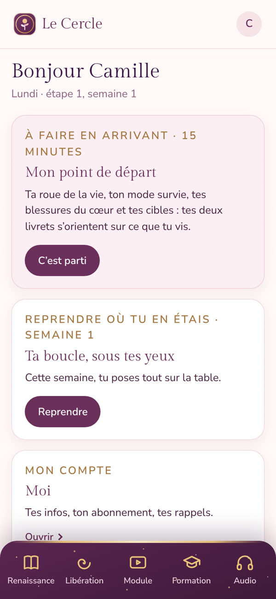
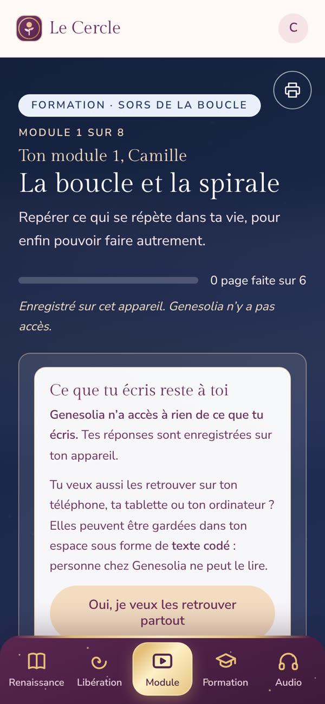
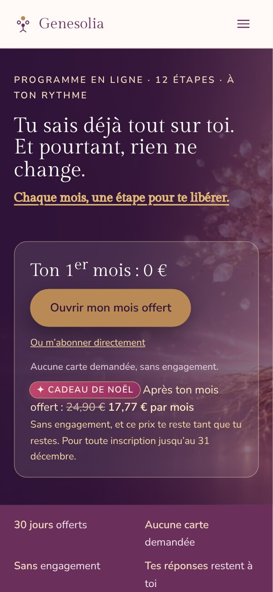
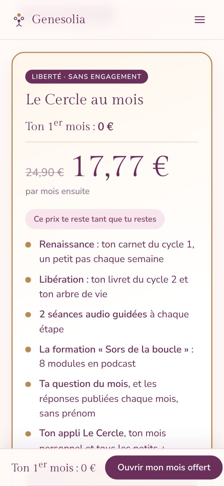
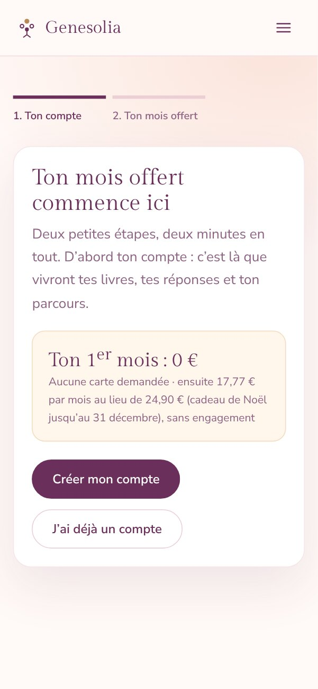
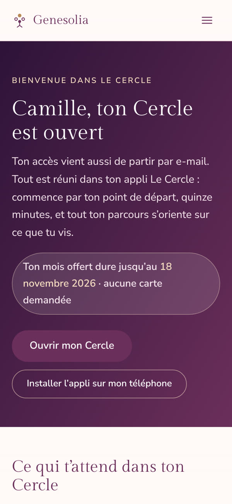
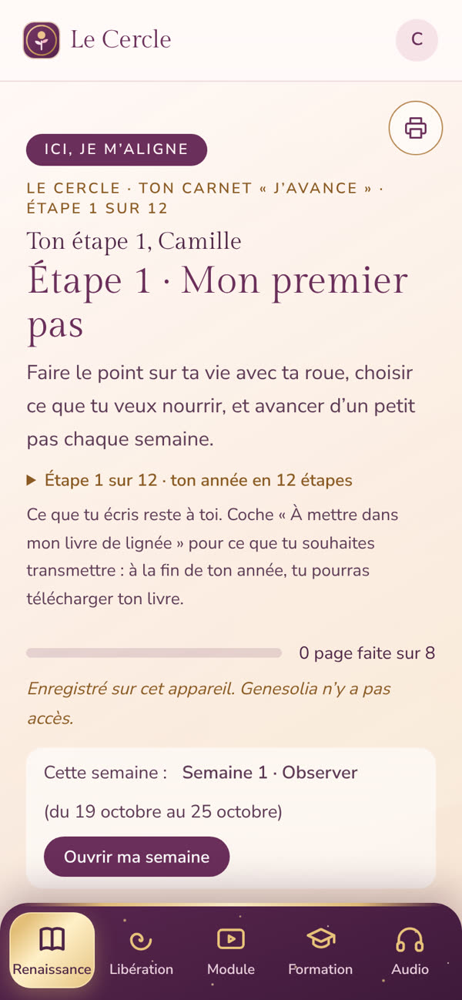
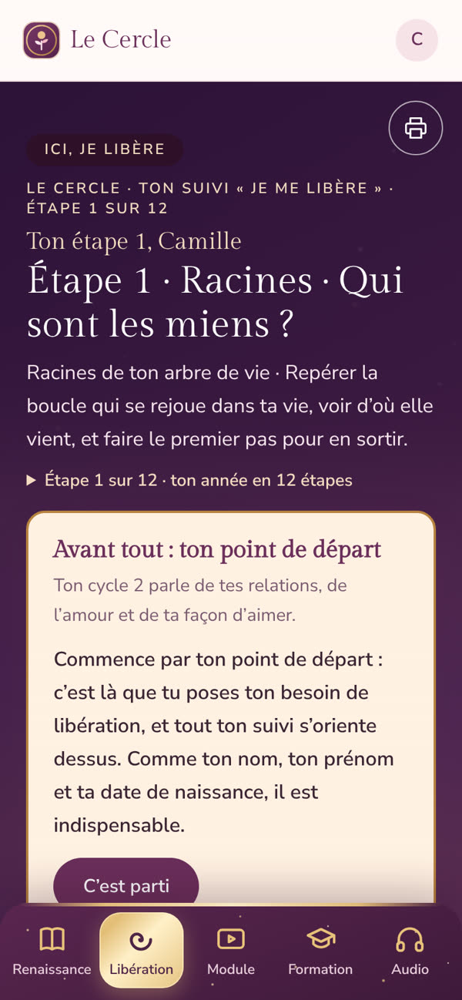
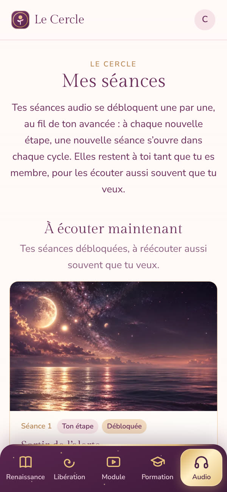
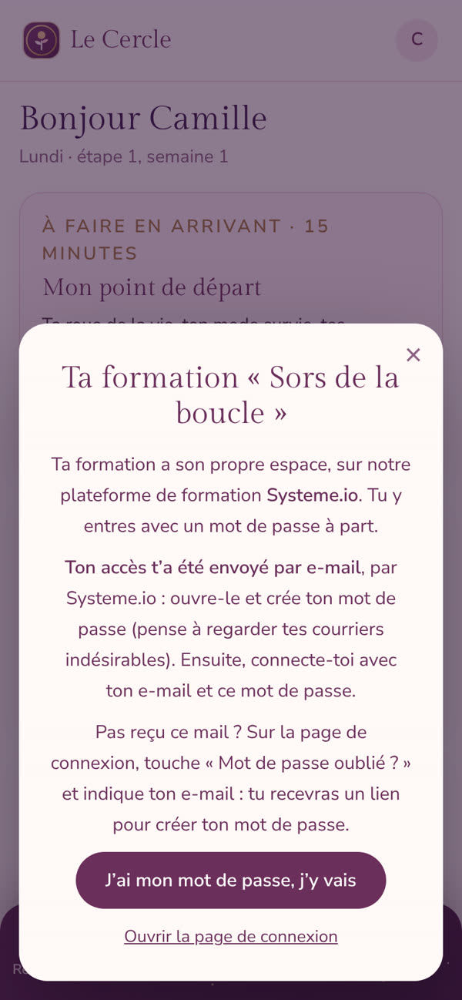

Genesolia · Mode d’emploi
De la page de découverte jusqu’à ta formation : comment tu entres dans Le Cercle, et comment il t’accompagne, étape après étape.
Ton 1er mois offert · sans carte12 étapes · 2 cycles · 24 séances audio
8 modules en podcast · une appli sur ton téléphone


Le Cercle en bref
Le Cercle t’accompagne pendant douze étapes, à raison de quelques minutes par jour. À chaque étape, une nouvelle partie de ton chemin s’ouvre, et tout est prêt dans ton appli : tu n’as rien à organiser.
Cycle 1 · Ici, je m’aligne
Ton carnet pour sortir de la peur et du mode survie, et vivre en accord avec toi. Un petit pas chaque semaine, un petit rendez-vous chaque jour, et ton corps comme allié.
Cycle 2 · Ici, je libère
Ton livret pour comprendre comment tu aimes, déposer ce qui se rejoue dans ta lignée, et aimer plus grand. Avec ta saison et ton geste de saison.
À écouter
Deux séances guidées à chaque étape, une pour chaque cycle, à écouter au calme, autant de fois que tu veux.
La formation
Huit modules en podcast, un par étape, avec leur carnet de pratique dans l’appli.
Combien ça coûte ? Le premier mois est offert, sans carte bancaire. Ensuite : 24,90 € par mois, sans engagement, ou 199 € l’année (offre de Noël, au lieu de 249 €). Tout est compris, la formation aussi.
Cadeau de Noël. Pour toute inscription jusqu’au 31 décembre, ton abonnement au mois passe à 17,77 € par mois, sans engagement, et ce prix te reste tant que tu restes.
Ce que tu écris reste à toi. Genesolia n’a accès à rien de ce que tu écris. Tes réponses sont enregistrées sur ton appareil, ou dans ton espace sous forme de texte codé si tu veux les retrouver partout.
Avant de t’inscrire
Tout commence sur la page du Cercle, accessible depuis le bouton « Le Cercle » en haut de chaque page du site, ou directement sur genesolia.fr/abonnement.html.
Tu y trouves ce que contient chaque étape, un extrait de séance audio à écouter, des captures de l’appli, les deux formules et les réponses aux questions les plus fréquentes.
Le bouton « Ouvrir mon mois offert » t’accompagne tout au long de la page. Aucune carte n’est demandée pour commencer.
Tu préfères payer tout de suite ? « Ou m’abonner directement », sous le bouton du mois offert : le paiement passe par Stripe, en toute sécurité.
Le point de départ est offert : quinze minutes pour faire le point sur ta vie (ta roue de la vie, ton mode survie, tes blessures du cœur, tes cibles). Tu indiques ton prénom et ton e-mail, et tu reçois tes résultats.
Tes réponses sont gardées : si tu rejoins Le Cercle ensuite, ton parcours s’oriente déjà sur ce que tu vis.

La page du Cercle

La formule au mois
L’inscription

Deux étapes, deux minutes
L’inscription se fait en deux étapes, sans carte bancaire.
Bon à savoir. Le mois offert s’ouvre une seule fois par compte. Avant la fin, un e-mail te propose de continuer. Si tu ne réponds pas, ton mois offert s’arrête simplement, sans rien te facturer. Et si tu t’abonnes pendant ton mois offert, tes jours offerts restants s’ajoutent à ton abonnement : tu ne perds rien.
Pense aussi à vérifier tes courriers indésirables et, sur Gmail, l’onglet « Promotions ». Ajoute Genesolia à tes contacts pour ne rien manquer.
Bienvenue
Tu arrives sur ta page de bienvenue. Elle t’indique jusqu’à quand court ton mois offert, et te montre ce qui t’attend en quatre cartes : Renaissance, Libération, tes séances audio et ta formation. Touche une carte pour l’ouvrir directement, ou « Ouvrir mon Cercle » pour arriver sur ton accueil.
Pas besoin de store : Le Cercle s’installe depuis le site, en une minute.
Tu retrouves ces explications à tout moment dans « Moi », rubrique Aide, « Installer l’appli Le Cercle ».

Ta page de bienvenue
Ton appli
Chaque fois que tu ouvres Le Cercle, ton accueil te dit où tu en es (l’étape et la semaine), et ce qui t’attend aujourd’hui.
L’accueil
Mon abonnement
Mes rappels
Aide
Mes données · Mentions légales · Me déconnecter
« Moi », ton espace
Ton chemin du mois
En bas de l’écran, ta barre te suit partout :
| Renaissance | Ton carnet du cycle 1, l’étape en cours, un petit pas chaque semaine. |
| Libération | Ton livret du cycle 2, pour l’étape en cours. |
| Module | Le carnet de ton module de formation. |
| Formation | Ton espace de formation (les podcasts), sur Systeme.io. |
| Audio | Tes séances guidées. |

Renaissance · étape 1

Libération · étape 1
Seulement dans Renaissance
Le fil des 7 jours : un petit rendez-vous par jour, une consigne de deux minutes à cocher. Les derniers jours du mois en plus sont des jours de passage, qui t’invitent à remplir ton bilan du mois.
Mon corps : ta pratique du corps de la semaine (voir page suivante), puis Mon bilan du mois.
Ton fond d’écran du mois, pour ton téléphone et ton ordinateur, à enregistrer sous ton carnet quand il est disponible.
Seulement dans Libération
Tes quatre semaines : voir ce qui vient, ta boucle sous tes yeux, libérer, ton geste différent.
Ta saison : la saison de ton étape, ton geste de saison et ton autel de saison.
Chaque rendez-vous n’existe qu’à un seul endroit : rien ne se répète d’un livre à l’autre.
Chaque carnet se remplit à ton rythme, semaine après semaine. Tes réponses s’enregistrent toutes seules, et tu peux imprimer chaque carnet pour l’écrire à la main.
Nouveau dans Renaissance
À chaque étape, ton carnet Renaissance a un onglet « Mon corps », juste avant « Mon bilan du mois ». Ton corps garde la mémoire de ce que tu as vécu, et parfois de ce que ta lignée a vécu. Comprendre ouvre la porte ; ton corps, lui, la traverse.
Quand ça déborde, deux façons, prends celle qui te parle : demander à ton guide, à ta lumière, ou à ce en quoi tu crois, de libérer ce trop-plein avec douceur ; ou le geste concret : souffler longuement vers la terre, puis passer tes mains sous l’eau fraîche.
Écouter · comprendre · libérer
1 · Écouter
2 · Comprendre
Une expiration plus longue dit à ton corps : tu peux te poser.3 · Libérer, chaque jour
L’onglet « Mon corps »
Au bout d’un an : reconnaître ton corps, écouter ton intuition, sentir les énergies autour de toi et faire la différence avec les tiennes, avoir un vrai discernement. Dans « Mon bilan du mois », un tableau reprend ton corps semaine par semaine : énergie, tension, sommeil, avant et après, jours de pratique.
Va toujours en douceur. Si un geste est inconfortable, arrête-le ou adapte-le. Ces pratiques ne remplacent pas l’avis d’un professionnel de santé, en cas de douleur, de grossesse ou de souci de santé.
Pratiquer et écouter
Le carnet du module

Tes séances audio
Ouverture (ce qui se répète, ce que tu aimerais vivre) · Comprendre (la page du module et son histoire) · Exercices · Outil (le petit geste du quotidien) · Avancer · Bilan.
Deux séances guidées s’ouvrent à chaque étape, une pour chaque cycle. Elles restent à toi tant que tu es membre : réécoute-les aussi souvent que tu veux, au calme, avec des écouteurs.
Un cadenas ? Un module ou une séance avec un cadenas s’ouvrira à l’étape suivante. Rien n’est à rattraper : tout ce qui est ouvert le reste.
La formation
Ta formation a son propre espace, sur notre plateforme de formation Systeme.io. Tu y entres avec un mot de passe à part.
Un module par étape. Le module 1 s’ouvre dès ton mois offert, puis un nouveau module à chaque nouvelle étape de ton Cercle, jusqu’au module 8. Un module ouvert le reste.
Pas reçu l’e-mail de Systeme.io ? Regarde tes courriers indésirables. Sinon, touche « Formation », puis « Mot de passe oublié ? » avec ton e-mail : tu reçois un lien pour créer ton mot de passe.

La fenêtre qui t’explique la connexion
Sur le site
Sur genesolia.fr, « Mon espace » réunit ton compte. Tu y arrives en te connectant, depuis le menu du site.
En haut
Les espaces qui te sont ouverts, pour passer de l’un à l’autre : Le Cercle, Ma spirale, Genesolia Pro.
Ma spirale est une offre à part, avec son propre abonnement.
Ton compte
Mes repères de naissance : tous tes prénoms, ton nom de naissance et ta date de naissance. Ils servent de base partout dans ton espace : Le Cercle, Ma spirale, ton guide du mois.
Ta formule en cours, avec son état. Pour te désabonner, quand tu veux, sans frais, en trois étapes :
Ton accès reste ouvert jusqu’à la fin de la période déjà payée. Pendant ton mois offert, rien n’est prélevé. Depuis l’appli, « Moi », puis « Gérer ou me désabonner », t’amène au même endroit.
Dans les outils du site, tu peux toujours entrer une autre date de naissance, pour un·e proche par exemple : tes repères, eux, ne changent pas.
Et ensuite
| Pas d’e-mail | Regarde tes courriers indésirables et l’onglet « Promotions », puis ajoute Genesolia à tes contacts. |
| Formation | La page demande un mot de passe : c’est celui de ta formation, reçu de Systeme.io, pas celui du Cercle. |
| Cadenas | Un module ou une séance avec un cadenas s’ouvrira à l’étape suivante. |
| Fond d’écran | Pas encore là ? Il apparaît sous ton carnet Renaissance dès qu’il est disponible. |
| Me désabonner | « Moi », puis « Gérer ou me désabonner », ou « Mon espace », « Mes abonnements » sur le site. |
| Appli pas à jour | Ferme-la complètement, puis rouvre-la depuis son icône. |
| Autre chose | Écris à contact@genesolia.fr : chaque message est lu. |
Ton premier mois est offert, sans carte.
genesolia.fr/abonnement.html